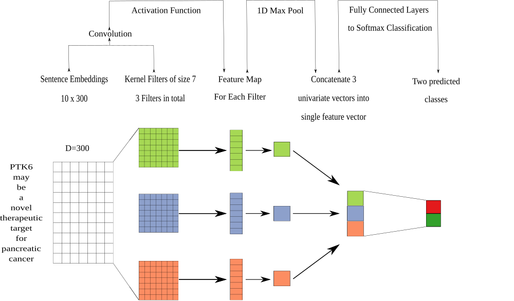

David N. Nicholson 0000-0003-0002-5761 · danich1 Department of Systems Pharmacology and Translational Therapeutics, University of Pennsylvania · Funded by GBMF4552
Daniel S. Himmelstein 0000-0002-3012-7446 · dhimmel · dhimmel Department of Systems Pharmacology and Translational Therapeutics, University of Pennsylvania · Funded by GBMF4552
Casey S. Greene 0000-0001-8713-9213 · cgreene · GreeneScientist Department of Systems Pharmacology and Translational Therapeutics, University of Pennsylvania · Funded by GBMF4552 and R01 HG010067
Abstract
Knowledge graphs support multiple research efforts by providing contextual information for biomedical entities, constructing networks, and supporting the interpretation of high-throughput analyses. These databases are populated via some form of manual curation, which is difficult to scale in the context of an increasing publication rate. Data programming is a paradigm that circumvents this arduous process by combining databases with simple rules and heuristics written as label functions, which are programs designed to automatically annotate textual data. Unfortunately, writing a useful label function requires substantial error analysis and is a nontrivial task that takes multiple days per function. This makes populating a knowledge graph with multiple nodes and edge types practically infeasible. We sought to accelerate the label function creation process by evaluating the extent to which label functions could be re-used across multiple edge types. We used a subset of an existing knowledge graph centered on disease, compound, and gene entities to evaluate label function re-use. We determined the best label function combination by comparing a baseline database-only model with the same model but added edge-specific or edge-mismatch label functions. We confirmed that adding additional edge-specific rather than edge-mismatch label functions often improves text annotation and show that this approach can incorporate novel edges into our source knowledge graph. We expect that continued development of this strategy has the potential to swiftly populate knowledge graphs with new discoveries, ensuring that these resources include cutting-edge results.
Introduction
Knowledge bases are important resources that hold complex structured and unstructured information. These resources have been used in important tasks such as network analysis for drug repurposing discovery [1,2,3] or as a source of training labels for text mining systems [4,5,6]. Populating knowledge bases often requires highly-trained scientists to read biomedical literature and summarize the results [7]. This time consuming process is referred to as manual curation. In 2007 researchers estimated that filling a knowledge base via manual curation would require approximately 8.4 years to complete [8]. The rate of publications continues to exponentially increase [9], so using only manual curation to fully populate a knowledge base has become impractical.
Relationship extraction has been studied as a solution towards handling the challenge posed by an exponentially growing body of literature [7]. This process consists of creating an expert system to automatically scan, detect and extract relationships from textual sources. Typically, these systems utilize machine learning techniques that require large corpora of well-labeled training data. These corpora are difficult to obtain, because they are constructed via particularly detailed manual curation. Distant supervision is a technique designed to sidestep the dependence on manual curation and quickly generate large training datasets. This technique makes the assumption that positive examples established in selected databases can be applied to any sentence that contains them [4]. The central problem with this technique is that generated labels are often of low quality which results in an immense amount of false positives [10].
Ratner et al. [11] recently introduced “data programming” as a solution. Data programming is a paradigm that combines distant supervision with simple rules and heuristics written as small programs called label functions. These label functions are consolidated via a noise aware generative model that is designed to produce training labels for large datasets. Using this paradigm can dramatically reduce the time required to obtain sufficient training data; however, writing a useful label function requires a significant amount of time and error analysis. This dependency makes constructing a knowledge base with a myriad of heterogenous relationships nearly impossible as tens or possibly hundreds of label functions are required per relationship type.
In this paper, we seek to accelerate the label function creation process by measuring the extent to which label functions can be re-used across different relationship types. We hypothesize that sentences describing one relationship type may share linguistic features such as keywords or sentence structure with sentences describing other relationship types. We conduct a series of experiments to determine the degree to which label function re-use enhanced performance over distant supervision alone. We focus on relationships that indicate similar types of physical interactions (i.e., gene-binds-gene and compound-binds-gene) as well as different types (i.e., disease-associates-gene and compound-treats-disease). Re-using label functions could dramatically reduce time required to populate a knowledge base with a multitude of heterogeneous relationships.
Related Work
Relationship extraction is the process of detecting semantic relationships from a collection of text. This process can be broken down into three different categories: (1) the use of natural language processing techniques such as manually crafted rules and heuristics for relationship extraction, (2) the use of unsupervised methods such as co-occurrence scores or clustering to find patterns within sentences and documents documents, and (3) the use of supervised or semi-supervised machine learning for classifying the presence of a relation within documents or sentences. In this section, we briefly discuss selected efforts under each category.
Rule Based Extractors
Rule based extractors rely heavily on expert knowledge to perform extraction. Typically, these systems use linguistic rules and heuristics to identify key sentences or phrases. For example, a hypothetical extractor focused on protein phosphorylation events would identify sentences containing the phrase “gene X phosphorylates gene Y” [12]. This word is a straightforward indication that two genes have a fundamental role in protein phosphorylation. Other phrase extractors have been used to identify drug-disease treatments [13], pharmcogenomic events [14] and protein-protein interactions [15,16]. These extractors provide a simple but effective way to extract sentences; however, they depend on extensive knowledge about the text to be properly constructed.
A sentence’s grammatical structure can also support relationship extraction with dependency trees. These trees are data structures that depict a sentence’s grammatical relation structure in the form of nodes and edges. Nodes represent words and the edges represent the dependency type each word shares between one another. For example, a possible extractor would classify sentences as a positive if a sentence contained the following dependency tree path: “gene X (subject)-> promotes (verb)<- cell death (direct object) <- in (preposition) <-tumors (object of preposition)” [17]. This approach provide extremely precise results, but the quantity of positive results remains modest as sentences appear in distinct forms and structure. Because of this limitation, recent approaches have incorporated methods on top of rule based extractors such as co-occurrence and machine learning systems [18,19]. We discuss the pros and cons of added methods in a later section. For this project, we constructed our label functions without the aid of these works; however, approaches discussed in this section provide substantial inspiration for novel label functions in future endeavors.
Unsupervised Extractors
Unsupervised extractors detect relationships without the need of annotated text. Notable approaches exploit the fact that two entities can occur together in text. This event is referred to as co-occurrence. Extractors utilize these events in by generating statistics on the frequency of entity pairs occurring in text. For example, a possible extractor would say gene X is associated with disease Y, because gene X and disease Y appear together more often than individually [20]. This approach has been used to establish the following relationship types: disease-gene relationships [20,21,22,23,24,25], protein-protein interactions [24,26,27], drug-disease treatments [28], and tissue-gene relations [29]. Extractors using the co-occurrence strategy provide exceptional recall results; however, these methods may fail to detect underreported relationships, because they depend on entity-pair frequency for detection. Junge et al. created a hybrid approach to account for this issue using distant supervision to train a classifier to learn the context of each sentence [30]. Once the classifier was trained, they scored every sentence within their corpus. Each sentence’s score was incorporated into calculating co-occurrence frequencies to establish relationship existence [30]. Co-occurrence approaches are powerful in establishing edges on the global scale; however, they cannot identify individual sentences without the need for supervised methods.
Clustering is an unsupervised approach that extracts relationships from text by group similar sentences together. Percha et al. used this technique to group sentences based on their grammatical structure [31]. Using Stanford’s Core NLP Parser [32] a dependency tree was generated. Each tree was clustered based on similarity and each cluster was manually annotated to determine which relationship each group represented [31]. For our project we incorporated the results of this work as domain heuristic label functions. Overall, unsupervised approaches are desirable since they do not require well-annotated training data. These approaches provide excellent recall; however, performance can be limited in terms of precision when compared to supervised machine learning methods [33,34].
Supervised Extractors
Supervised extractors consist of training a machine learning classifier and predict the existence of a relationship. These classifiers require access to well-annotated datasets, which are usually created via some form of manual curation. Previous work consists of research experts curating their own datasets to train classifiers [35,36,37,38,39,40,41,42,43]; however, there have been community-wide efforts to create datasets for shared tasks [44,45,46]. Shared tasks are open challeges that aim to build the best classifier for natural language processing tasks such as named entity tagging or relationship extraction. Notable example would be the BioCreative community that hosted a number of shared tasks such as predicting compound-protein interactions (BioCreative VI track 5) [45] and compound induced diseases [46]. Often these datasets are well annotated, but are modest in size (2,432 abstracts [45] for BioCreative VI and 1500 abstracts for BioCreative V [46]). As machine learning classifiers become increasingly complex, these small dataset sizes cannot suffice. Plus, these multitude of datasets are uniquely annotated which can generate noticeable differences in terms of classifier performance [46]. Overall, obtaining large well-annotated datasets still remains as an open non-trivial task.
Before the rise of deep learning, a classifier that was most frequently used was support vector machines. This classifier uses a projection function called a kernel to map data into a high dimensional space so datapoints can be easily discerned between classes [47]. This method was used to extract disease-gene associations [35,48,49], protein-protein interactions[19,50,51] and protein docking information [52]. Generally, svms perform well on small datasets with large feature spaces, but are slow to train as the number of datapoints becomes asymptotically large.
Deep learning has been increasingly popular throughout the decades as these methods can outperform common machine learning methods [53]. Approaches in this field consist of using various neural network architectures, such as recurrent neural networks [54,55,56,57,58,59] and convolutional neural networks [55,58,60,61,62], to extract relationships from text. In fact approaches in this field were the winning model within the BioCreative VI shared task [45,63]. Despite the large success of these models, they often require large amounts of data to perform well. Obtaining these large datasets is a time consuming tasks, which makes training these models a non-trivial task. Distant supervision has been used as solution to fix the barren amount of large datasets [4]. Approaches have used this paradigm to extract chemical-gene interactions [58], disease-gene associations [30] and protein-protein interactions [30,58,64]. In fact efforts done in [64] served as one of the motivating rationales for our work. Overall, deep learning has provided exceptional results in terms of relationships extraction and we decided to use a deep neural network as our discriminative model.
Materials and Methods
Hetionet
Figure 1: A metagraph (schema) of Hetionet where biomedical entities are represented as nodes and the relationships between them are represented as edges. We examined performance on the highlighted subgraph; however, the long-term vision is to capture edges for the entire graph.
Hetionet [3] is a large heterogenous network that contains pharmacological and biological information. This network depicts information in the form of nodes and edges of different types: nodes that represent biological and pharmacological entities and edges which represent relationships between entities. Hetionet v1.0 contains 47,031 nodes with 11 different data types and 2,250,197 edges that represent 24 different relationship types (Figure 1). Edges in Hetionet were obtained from open databases, such as the GWAS Catalog [65] and DrugBank [66]. For this project, we analyzed performance over a subset of the Hetionet relationship types: disease associates with a gene (DaG), compound binds to a gene (CbG), gene interacts with gene (GiG) and compound treating a disease (CtD).
Dataset
We used PubTator [67] as input to our analysis. PubTator provides MEDLINE abstracts that have been annotated with well-established entity recognition tools including DNorm [68] for disease mentions, GeneTUKit [69] for gene mentions, Gnorm [70] for gene normalizations and a dictionary based search system for compound mentions [71]. We downloaded PubTator on June 30, 2017, at which point it contained 10,775,748 abstracts. Then we filtered out mention tags that were not contained in hetionet. We used the Stanford CoreNLP parser [32] to tag parts of speech and generate dependency trees. We extracted sentences with two or more mentions, termed candidate sentences. Each candidate sentence was stratified by co-mention pair to produce a training set, tuning set and a testing set (shown in Table 1). Each unique co-mention pair is sorted into four categories: (1) in hetionet and has sentences, (2) in hetionet and doesn’t have sentences, (3) not in hetionet and does have sentences and (4) not in hetionet and doesn’t have sentences. Within these four categories each pair is randomly assigned their own individual partition rank (continuous number between 0 and 1). Any rank lower than 0.7 is sorted into the training set, while any rank greater than 0.7 and lower than 0.9 is assigned to the tuning set. The rest of the pairs with a rank greater than or equal to 0.9 is assigned to the test set. Sentences that contain more than one co-mention pair are treated as multiple individual candidates. We hand labeled five hundred to a thousand candidate sentences of each relationship type to obtain a ground truth set (Table 1)1.
Table 1: Statistics of Candidate Sentences. We sorted each candidate sentence into a training, tuning and testing set. Numbers in parentheses show the number of positives and negatives that resulted from the hand-labeling process.
Relationship
Train
Tune
Test
Disease Associates Gene
2.35 M
31K (397+, 603-)
313K (351+, 649-)
Compound Binds Gene
1.7M
468K (37+, 463-)
227k (31+, 469-)
Compound Treats Disease
1.013M
96K (96+, 404-)
32K (112+, 388-)
Gene Interacts Gene
12.6M
1.056M (60+, 440-)
257K (76+, 424-)
Label Functions for Annotating Sentences
The challenge of having too few ground truth annotations is common to many natural language processing settings, even when unannotated text is abundant. Data programming circumvents this issue by quickly annotating large datasets by using multiple noisy signals emitted by label functions [11]. Label functions are simple pythonic functions that emit: a positive label (1), a negative label (-1) or abstain from emitting a label (0). We combine these functions using a generative model to output a single annotation, which is a consensus probability score bounded between 0 (low chance of mentioning a relationship) and 1 (high chance of mentioning a relationship). We used these annotations to train a discriminator model that makes the final classification step.
Label Function Categories
Label functions can be constructed in a multitude of ways; however, many label functions share similar characteristics with one another.
We group these characteristics into the following categories: databases, text patterns and domain heuristics. Most of our label functions fall into the text pattern category, while the others were distributed across the database and domain heuristic categories (Table 2). We describe each category and provide an example using the candidate sentence: “PTK6 may be a novel therapeutic target for pancreatic cancer.”.
Databases: These label functions incorporate existing databases to generate a signal, as seen in distant supervision [4]. These functions detect if a candidate sentence’s co-mention pair is present in a given database. If the pair is present, our label function emits a positive label and abstains otherwise. If the pair is not present in any existing database, a separate label function emits a negative label. We used a separate label function to prevent a label imbalance problem that we encountered during development: emitting positives and negatives from the same label function causes downstream classifiers to generate almost exclusively negative predictions.
Domain Heuristics: These label functions used results from published text-based analyses to generate a signal. We used dependency path cluster themes generated by Percha et al. [31]. If a candidate sentence’s dependency path belonged to a previously generated cluster, then the label function emitted a positive label and abstained otherwise.
Text Patterns: These label functions are designed to use keywords and sentence context to generate a signal. For example, a label function could focus on the number of words between two mentions or focus on the grammatical structure of a sentence. These functions emit a positive or negative label depending on the context.
Each text pattern label function was constructed by manual examination of sentences within the training set. For example, in the candidate sentence above one would extract the keywords “novel therapeutic target” and incorporate them in a text pattern label function. After initial construction, we tested and augmented the label function using sentences in the tune set. We repeated the above process for each label function in our repertoire.
Table 2: The distribution of each label function per relationship.
Relationship
Databases (DB)
Text Patterns (TP)
Domain Heuristics (DH)
DaG
7
20
10
CtD
3
15
7
CbG
9
13
7
GiG
9
20
8
Training Models
Generative Model
The generative model is a core part of this automatic annotation framework. It integrates multiple signals emitted by label functions and assigns a training class to each candidate sentence. This model assigns training classes by estimating the joint probability distribution of the latent true class (\(Y\)) and label function signals (\(\Lambda\)), (\(P_{\theta}(\Lambda, Y)\)). Assuming each label function is conditionally independent, the joint distribution is defined as follows:
where \(m\) is the number of candidate sentences, \(F\) is the vector of summary statistics and \(\theta\) is a vector of weights for each summary statistic. The summary statistics used by the generative model are as follows:
Lab is the label function’s propensity (the frequency of a label function emitting a signal). Acc is the individual label function’s accuracy given the training class. This model optimizes the weights (\(\theta\)) by minimizing the negative log likelihood:
In the framework we used predictions from the generative model, \(\hat{Y} = P_{\hat{\theta}}(Y \mid \Lambda)\), as training classes for our dataset [72,73].
Discriminative Model
The generative model produces predicted probabilities for each sentence by integrating output from label functions. The discriminative model is a neural network trained to produce classification labels by intergrating predicted probabilities from the generative model as well as with sentence representations via word embeddings. The goal of this combined approach is to develop models that learn text features associated with the overall task that go beyond the supplied label functions. We used a piecewise convolutional neural network that contains multiple kernel filters as our discriminative model. We built a network with multiple filters using a fixed width of 300 (size of word embeddings) and a fixed height of 7 (Figure 2). We choose a fixed height of 7 because this height was previously reported to optimize performance in relationship classification [74]. We trained this model for 15 epochs using the Adam optimizer [75] with pytorch’s default parameter settings and a learning rate of 0.001 that decreases by half every epoch until the lower bound of 1e-5 is reached, which we observed was often sufficient for convergence. We added a L2 penalty (lambda=0.002) on the network weights to prevent overfitting. Lastly, we added a dropout layer (p=0.25) between the fully connected layer and the softmax layer.
Figure 2: The architecture of the discriminative model was a convolutional neural network. We performed a convolution step using multiple filters. The filters generated a feature map that was sent into a maximum pooling layer that was designed to extract the largest feature in each map. The extracted features were concatenated into a singular vector that was passed into a fully connected network. The fully connected network had 300 neurons for the first layer, 100 neurons for the second layer and 50 neurons for the last layer. The last step from the fully connected network was to generate predictions using a softmax layer.
Word Embeddings
Word embeddings are representations that map individual words to real valued vectors of user-specified dimensions. These embeddings have been shown to capture the semantic and syntactic information between words [76]. We trained Facebook’s fastText [77] using all candidate sentences for each individual relationship pair to generate word embeddings. FastText uses a skip-gram model [78] that aims to predict the surrounding context for a candidate word and pairs the model with a novel scoring function that treats each word as a bag of character n-grams. We trained this model for 20 epochs using a window size of 2 and generated 300-dimensional word embeddings. We use the optimized word embeddings as input to our discriminative model.
Calibration of the Discriminative Model
Often many tasks require a machine learning model to output reliable probability predictions. A model is well calibrated if the probabilities emitted from the model match the observed probabilities. For example, a well-calibrated model that assigns a class label with 80% probability should have that class appear 80% of the time. Deep neural network models can often be poorly calibrated [79,80]. These models are usually over-confident in their predictions. For this reason, we calibrated our convolutional neural network using temperature scaling. Temperature scaling uses a parameter T to scale each value of the logit vector (z) before being passed into the softmax (SM) function.
We found the optimal T by minimizing the negative log likelihood (NLL) of the tune set.
Experimental Design
Being able to re-use label functions across edge types would substantially reduce the number of label functions required to extract multiple relationships from biomedical literature. We first established a baseline by training a generative model using only distant supervision label functions designed for the target edge type. For example, in the Gene interacts Gene (GiG) edge type we used label functions that returned a 1 if the pair of genes were included in the Human Interaction database [81], the iRefIndex database [82] or in the Incomplete Interactome database [83]. Then we compared the baseline model with models that also included text and domain-heuristic label functions. Using a sampling with replacement approach, we sampled these text and domain-heuristic label functions separately within edge types, across edge types, and from a pool of all label functions. We compared within-edge-type performance to across-edge-type and all-edge-type performance. For each edge type we sampled a fixed number of label functions consisting of five evenly spaced numbers between one and the total number of possible label functions. We repeated this sampling process 50 times for each point. We evaluated both generative and discriminative (training and downstream analyses are described in the supplemental methods section) models at each point, and report performance of each in terms of the area under the receiver operating characteristic curve (AUROC) and the area under the precision-recall curve (AUPR).
Results
Generative Model Using Randomly Sampled Label Functions
Creating label functions is a labor intensive process that can take days to accomplish. We sought to accelerate this process by measuring the extent to which label functions can be reused. Our hypothesis was that certain edge types share similar linguistic features such as keywords and/or sentence structure. This shared characteristic would make certain edge types amenable to label function reuse. We designed a set of experiments to test this hypothesis on an individual level (edge vs edge) as well as a global level (collective pool of sources). We report results in terms of AUROC (Figures 3 and 4) and AUPR (Supplemental Figure 9 and 10).
Performance increases when edge-specific label functions are added to an edge-specific baseline model, while label function reusability shows modest results. The quintessential example of the overarching trend is the Compound treats Disease (CtD) edge type, where edge-specific label functions always outperformed transferred label functions. However, there are hints of label function transferability for selected edge types and label function sources. Performance increases as more CbG label functions are incorporated to the GiG baseline model and vise-versa. This suggests that sentences for GiG and CbG may share similar linguistic features or terminology that allows for label functions to be reused. Edge-specific Disease associates Gene (DaG) label functions did not improve performance over label functions drawn from other edge types. Overall, only CbG and GiG show significant signs of reusability which suggests label functions could be shared between the two edge types.
Figure 3: Edge-specific label functions are better performing than edge-mismatch label functions but certain mismatch situations show signs of successful transfer. Each line plot header depicts the edge type the generative model is trying to predict, while the colors represent the source of label functions. For example orange represents sampling label functions designed to predict the Compound treats Disease (CtD) edge type. The x axis shows the number of randomly sampled label functions being incorporated onto the database only baseline model (point at 0). The y axis shows area under the receiver operating curve (AUROC). Each point on the plot shows the average of 50 sample runs, while the error bars show the 95% confidence intervals of all runs. The baseline and “All” data points consist of sampling from the entire fixed set of label functions.
We found that sampling from all label function sources at once usually underperformed relative to edge-specific label functions (Figure 4). As more label functions were sampled, the gap between edge-specific sources and all sources widened. CbG is a prime example of this trend (Figure 4), while CtD and GiG show a similar but milder trend. DaG was the exception to the general rule: the pooled set of label functions improved performance over the edge-specific ones, which aligns with the previously observed results for individual edge types (Figure 3). The decreasing trend when pooling all label functions supports the notion that label functions cannot easily transfer between edge types (exception being CbG on GiG and vise versa).
Figure 4: Using all label functions generally hinders generative model performance. Each line plot header depicts the edge type the generative model is trying to predict, while the colors represent the source of label functions. For example, orange represents sampling label functions designed to predict the Compound treats Disease (CtD) edge type. The x axis shows the number of randomly sampled label functions being incorporated onto the database only baseline model (point at 0). The y axis shows area under the receiver operating curve (AUROC). Each point on the plot shows the average of 50 sample runs, while the error bars show the 95% confidence intervals of all runs. The baseline and “All” data points consist of sampling from the entire fixed set of label functions.
Discriminative Model Performance
Figure 5: The discriminator model usually improves at a faster rate than the generative model as more edge-specific label function are included. The line plot headers represents the specific edge type the discriminator model is trying to predict. The x-axis shows the number of randomly sampled label functions that are incorporated on top of the baseline model (point at 0). The y axis shows the area under the receiver operating curve (AUROC). Each datapoint represents the average of each 50 sample run and the error bars represent the 95% confidence interval of each run. The baseline and “All” data points consist of sampling from the entire fixed set of label functions. This makes the error bars appear flat.
The discriminator model is designed to augment performance over the generative model by incorporating textual features along with estimated training labels. The discriminative model is a piecewise convolutional neural network trained over word embeddings (See Methods). We found that the discriminative model generally out-performed the generative model as more edge-specific label functions are incorporated (Figure 5 and Supplemental Figure 11). The discriminator model’s performance is often poorest when very few edge-specific label functions are added to the baseline model (seen in Disease associates Gene (DaG), Compound binds Gene (CbG) and Gene interacts Gene (GiG)). This suggests that generative models trained with more label functions produce outputs that are more suitable for training discriminative models. An exception to this trend is Compound treats Disease (CtD) where the discriminator model out-performs the generative model at all levels of sampling. We observed the opposite trend with the Compound-binds-Gene (CbG) edges: the discriminator model was always poorer or indistinguishable from the generative model. Interestingly, the AUPR for CbG plateaus below the generative model and the decreases when all edge-specific label functions are used (Supplemental Figure 11). This suggests that the discriminator model might be predicting more false positives in this setting. Incorporating more edge-specific label functions usually improves performance for the discriminator model over the generator model.
Discriminative Model Calibration
Figure 6: Deep learning models are overconfident in their predictions and need to be calibrated after training. These are calibration plots for the discrimintative model. The green line represents the predictions before calibration and the blue line shows predictions after calibration. Data points that lie closer to diagonal line show better model calibration, while data points far from the diagonal show poor performance. A perfectly calibrated model would align straight along the diagonal line.
Even deep learning models with good AUROC and AUPR statistics can be subject to poor calibration. Typically, these models are overconfident in their predictions [79,80]. We attempted to use temperature scaling to fix the calibration of the best performing discriminative models (Figure 6). Before calibration (green lines), our models were aligned with the ideal calibration only when predicting low probability scores (close to 0.25). Applying the temperature scaling calibration algorithm (blue lines) did not substantially improve the calibration of the model in most cases. The exception to this pattern is the Disease associates Gene (DaG) model where high confidence scores are shown to be better calibrated. Overall, calbrating deep learning models is a nontrivial task that requires more complex approaches to accomplish.
Text mined edges can expand a database-derived knowledge graph
Figure 7: Text-mined edges recreate a substantial fraction of an existing knowledge graph and include new predictions. This bar chart shows the number of edges we can successfully recall in green and shows the number of new edges that can be added in blue.
The recall for the Hetionet v1 knowledge graph is shown as a percentage in parentheses. For example, for the compound treats disease edge our method recalls 85% of existing edges as adds 6,088 new edges.
One of the goals in our work is to measure the extent to which learning multiple edge types could construct a biomedical knowledge graph. Hetionet v1 is a knowledge graph that was constructed from biomedical databases. We measured this framework’s recall and quantified how many new edges could be added with high confidence. Overall, we were able to recall more than half of preexisting edges for all edge types (Figure 7) and report our top ten scoring sentences for each edge type in Supplemental Table 11. Our best recall is with the Compound treats Disease (CtD) edge type, where we retain 85% of preexisting edges. Plus, we can add over 6,000 new edges to that category. In contrast, we could only recall close to 70% of existing edges for the other categories; however, we can add over 40,000 novel edges to each category. This highlights the fact that Hetionet v1 is missing a compelling amount of biomedical information and this framework is a viable way to close the information gap.
Comparison with CoCoScore using Hetionet v1 as an evaluation set
Figure 8: Our extractor shows similar performance to a previously published method when using Hetionet v1 as an evaluation set. We compared our model (blue) with the CoCoScore model [30](green) . The y axis represents AUROC and the x axis represents the edge type both models are trying to predict.
Our model showed promising performance in terms of recalling edges in Hetionet v1. We assessed our model’s performance relative to a recently published method [30]. Though our method is primarily designed to predicted assertions, not edges, we compared performance at an edge level because this was available for CoCoScore. We found that a simple summary approach, max sentence score, provided comparable performance to the CoCoScore for the compound treats disease (CtD) edge type and slightly poorer performance for other edge types (Figure 8). Sentence-level scores can be integrated in multiple ways, and approaches that consider more complexity (e.g., the number of sentences with high-probability) should be evaluated in future work.
Discussion
We measured the extent to which label functions can be re-used across multiple edge types to extract relationships from literature. Through our sampling experiment, we found that adding edge-specific label functions increases performance for the generative model (??. We found that label functions designed from relatively related edge types can increase performance (Gene interacts Gene (GiG) label functions predicting the Compound binds Gene (CbG) edge and vice versa), while the Disease associates Gene (DaG) edge type remained agnostic to label function sources (Figure ?? and Supplemental Figure ??). Furthermore, we found that using all label functions at once generally hurts performance with the exception being the DaG edge type (Figure 4 and Supplemental Figure 10). One possibility for this observation is that DaG is a broadly defined edge type, e.g., “associates” contains many concepts related to other edge types such as Disease (up/down)regulating a gene, which makes it more agnostic to label function sources (examples highlighted in our annotated sentences).
Regarding the discriminator model, adding edge-specific label function substantially improved performance for two out of the four edge types (Compound treats Disease (CtD) and DaG) (??). GiG and CbG discriminator models showed minor improvements compared to the generative model, but only when nearly all edge-specific label functions are included. We came across a large amount of spurious gene mentions when working with the discriminative model and believe these mentions contributed to CbG and GiG’s hindered performance. We encountered difficulty in calibrating each discriminator model (Figure 6). The temperature scaling algorithm appears to improve calibration for the highest scores for each model but did not successfully calibrate throughout the entire range of predictions. Improving performance throughout the range may require more labeled examples or may be a limitation of the approach in this setting. Even with these limitations, this early-stage approach could recall many existing edges from an existing knowledge base, Hetionet v1, and suggest many new high-confidence edges for inclusion. Our findings suggest that further work, including an expansion of edge types and a move to full text from abstracts, may make this approach suitable for building continuously updated knowledge bases to address drug repositioning and other biomedical challenges.
Conclusion and Future Direction
Filling out knowledge bases via manual curation can be an arduous and erroneous task [8]. As the rate of publications increases, relying on manual curation alone becomes impractical. Data programming, a paradigm that uses label functions as a means to speed up the annotation process, can be used as a solution for this problem. An obstacle for this paradigm is creating useful label functions, which takes a considerable amount of time. We tested the feasibility of reusing label functions as a way to reduce the total number of label functions required for strong prediction performance. We conclude that label functions may be re-used with closely related edge types, but that re-use does not improve performance for most pairings. The discriminative model’s performance improves as more edge-specific label functions are incorporated into the generative model; however, we did notice that performance greatly depends on the generative model.
This work sets up the foundation for creating a common framework that mines text to create edges. Within this framework we would continuously ingest new knowledge as novel findings are published, while providing a single confidence score for an edge via sentence score consolidation. As opposed to many existing knowledge graphs, for example Hetionet where text-derived edges generally cannot be exactly attributed to excerpts from literature [3,84], our approach has the potential to annotate each edge based on its source sentences. In addition, edges generated with this approach would be unencumbered from upstream licensing or copyright restrictions, enabling openly licensed hetnets at a scale not previously possible [85,86,87]. New multitask learning [73] strategies may make it even more practical to reuse label functions to construct continuously updating literature-derived knowledge graphs.
The authors would like to thank Christopher Ré’s group at Stanford Univeristy, especially Alex Ratner and Steven Bach, for their assistance with this project. We also want to thank Graciela Gonzalez-Hernandez for her advice and input with this project. This work was support by Grant GBMF4552 from the Gordon Betty Moore Foundation.
References
1. Graph Theory Enables Drug Repurposing – How a Mathematical Model Can Drive the Discovery of Hidden Mechanisms of Action
Ruggero Gramatica, T. Di Matteo, Stefano Giorgetti, Massimo Barbiani, Dorian Bevec, Tomaso Aste PLoS ONE (2014-01-09) https://doi.org/gf45zp
DOI: 10.1371/journal.pone.0084912 · PMID: 24416311 · PMCID: PMC3886994
2. Drug repurposing through joint learning on knowledge graphs and literature
Mona Alshahrani, Robert Hoehndorf Cold Spring Harbor Laboratory (2018-08-06) https://doi.org/gf45zk
DOI: 10.1101/385617
3. Systematic integration of biomedical knowledge prioritizes drugs for repurposing
Daniel Scott Himmelstein, Antoine Lizee, Christine Hessler, Leo Brueggeman, Sabrina L Chen, Dexter Hadley, Ari Green, Pouya Khankhanian, Sergio E Baranzini eLife (2017-09-22) https://doi.org/cdfk
DOI: 10.7554/elife.26726 · PMID: 28936969 · PMCID: PMC5640425
4. Distant supervision for relation extraction without labeled data
Mike Mintz, Steven Bills, Rion Snow, Dan Jurafsky Proceedings of the Joint Conference of the 47th Annual Meeting of the ACL and the 4th International Joint Conference on Natural Language Processing of the AFNLP: Volume 2 - ACL-IJCNLP ’09 (2009) https://doi.org/fg9q43
DOI: 10.3115/1690219.1690287
5. CoCoScore: Context-aware co-occurrence scoring for text mining applications using distant supervision
Alexander Junge, Lars Juhl Jensen Cold Spring Harbor Laboratory (2018-10-16) https://doi.org/gf45zm
DOI: 10.1101/444398
7. Facts from text: can text mining help to scale-up high-quality manual curation of gene products with ontologies?
R. Winnenburg, T. Wachter, C. Plake, A. Doms, M. Schroeder Briefings in Bioinformatics (2008-07-11) https://doi.org/bfsnwg
DOI: 10.1093/bib/bbn043 · PMID: 19060303
8. Manual curation is not sufficient for annotation of genomic databases
William A. Baumgartner Jr, K. Bretonnel Cohen, Lynne M. Fox, George Acquaah-Mensah, Lawrence Hunter Bioinformatics (2007-07-01) https://doi.org/dtck86
DOI: 10.1093/bioinformatics/btm229 · PMID: 17646325 · PMCID: PMC2516305
9. Growth rates of modern science: A bibliometric analysis based on the number of publications and cited references
Lutz Bornmann, Rüdiger Mutz Journal of the Association for Information Science and Technology (2015-04-29) https://doi.org/gfj5zc
DOI: 10.1002/asi.23329
10. Revisiting distant supervision for relation extraction
Tingsong Jiang, Jing Liu, Chin-Yew Lin, Zhifang Sui LREC (2018)
11. Data Programming: Creating Large Training Sets, Quickly
Alexander Ratner, Christopher De Sa, Sen Wu, Daniel Selsam, Christopher Ré arXiv (2016-05-25) https://arxiv.org/abs/1605.07723v3
12. RLIMS-P 2.0: A Generalizable Rule-Based Information Extraction System for Literature Mining of Protein Phosphorylation Information
Manabu Torii, Cecilia N. Arighi, Gang Li, Qinghua Wang, Cathy H. Wu, K. Vijay-Shanker IEEE/ACM Transactions on Computational Biology and Bioinformatics (2015-01-01) https://doi.org/gf8fpv
DOI: 10.1109/tcbb.2014.2372765 · PMID: 26357075 · PMCID: PMC4568560
13. Large-scale extraction of accurate drug-disease treatment pairs from biomedical literature for drug repurposing
Rong Xu, QuanQiu Wang BMC Bioinformatics (2013-06-06) https://doi.org/gb8v3k
DOI: 10.1186/1471-2105-14-181 · PMID: 23742147 · PMCID: PMC3702428
15. PPInterFinder—a mining tool for extracting causal relations on human proteins from literature
Kalpana Raja, Suresh Subramani, Jeyakumar Natarajan Database (2013-01-01) https://doi.org/gf479b
DOI: 10.1093/database/bas052 · PMID: 23325628 · PMCID: PMC3548331
16. HPIminer: A text mining system for building and visualizing human protein interaction networks and pathways
Suresh Subramani, Raja Kalpana, Pankaj Moses Monickaraj, Jeyakumar Natarajan Journal of Biomedical Informatics (2015-04) https://doi.org/f7bgnr
DOI: 10.1016/j.jbi.2015.01.006 · PMID: 25659452
18. Textpresso Central: a customizable platform for searching, text mining, viewing, and curating biomedical literature
H.-M. Müller, K. M. Van Auken, Y. Li, P. W. Sternberg BMC Bioinformatics (2018-03-09) https://doi.org/gf7rbz
DOI: 10.1186/s12859-018-2103-8 · PMID: 29523070 · PMCID: PMC5845379
19. LimTox: a web tool for applied text mining of adverse event and toxicity associations of compounds, drugs and genes
Andres Cañada, Salvador Capella-Gutierrez, Obdulia Rabal, Julen Oyarzabal, Alfonso Valencia, Martin Krallinger Nucleic Acids Research (2017-05-22) https://doi.org/gf479h
DOI: 10.1093/nar/gkx462 · PMID: 28531339 · PMCID: PMC5570141
20. DISEASES: Text mining and data integration of disease–gene associations
Sune Pletscher-Frankild, Albert Pallejà, Kalliopi Tsafou, Janos X. Binder, Lars Juhl Jensen Methods (2015-03) https://doi.org/f3mn6s
DOI: 10.1016/j.ymeth.2014.11.020 · PMID: 25484339
21. PolySearch2: a significantly improved text-mining system for discovering associations between human diseases, genes, drugs, metabolites, toxins and more
Yifeng Liu, Yongjie Liang, David Wishart Nucleic Acids Research (2015-04-29) https://doi.org/f7nzn5
DOI: 10.1093/nar/gkv383 · PMID: 25925572 · PMCID: PMC4489268
23. LGscore: A method to identify disease-related genes using biological literature and Google data
Jeongwoo Kim, Hyunjin Kim, Youngmi Yoon, Sanghyun Park Journal of Biomedical Informatics (2015-04) https://doi.org/f7bj9c
DOI: 10.1016/j.jbi.2015.01.003 · PMID: 25617670
24. A comprehensive and quantitative comparison of text-mining in 15 million full-text articles versus their corresponding abstracts
David Westergaard, Hans-Henrik Stærfeldt, Christian Tønsberg, Lars Juhl Jensen, Søren Brunak PLOS Computational Biology (2018-02-15) https://doi.org/gcx747
DOI: 10.1371/journal.pcbi.1005962 · PMID: 29447159 · PMCID: PMC5831415
25. Literature Mining for the Discovery of Hidden Connections between Drugs, Genes and Diseases
Raoul Frijters, Marianne van Vugt, Ruben Smeets, René van Schaik, Jacob de Vlieg, Wynand Alkema PLoS Computational Biology (2010-09-23) https://doi.org/bhrw7x
DOI: 10.1371/journal.pcbi.1000943 · PMID: 20885778 · PMCID: PMC2944780
26. Analyzing a co-occurrence gene-interaction network to identify disease-gene association
Amira Al-Aamri, Kamal Taha, Yousof Al-Hammadi, Maher Maalouf, Dirar Homouz BMC Bioinformatics (2019-02-08) https://doi.org/gf49nm
DOI: 10.1186/s12859-019-2634-7 · PMID: 30736752 · PMCID: PMC6368766
27. COMPARTMENTS: unification and visualization of protein subcellular localization evidence
J. X. Binder, S. Pletscher-Frankild, K. Tsafou, C. Stolte, S. I. O’Donoghue, R. Schneider, L. J. Jensen Database (2014-02-25) https://doi.org/btbm
DOI: 10.1093/database/bau012 · PMID: 24573882 · PMCID: PMC3935310
28. A new method for prioritizing drug repositioning candidates extracted by literature-based discovery
Majid Rastegar-Mojarad, Ravikumar Komandur Elayavilli, Dingcheng Li, Rashmi Prasad, Hongfang Liu 2015 IEEE International Conference on Bioinformatics and Biomedicine (BIBM) (2015-11) https://doi.org/gf479j
DOI: 10.1109/bibm.2015.7359766
29. Comprehensive comparison of large-scale tissue expression datasets
Alberto Santos, Kalliopi Tsafou, Christian Stolte, Sune Pletscher-Frankild, Seán I. O’Donoghue, Lars Juhl Jensen PeerJ (2015-06-30) https://doi.org/f3mn6p
DOI: 10.7717/peerj.1054 · PMID: 26157623 · PMCID: PMC4493645
30. CoCoScore: context-aware co-occurrence scoring for text mining applications using distant supervision
Alexander Junge, Lars Juhl Jensen Bioinformatics (2019-06-14) https://doi.org/gf4789
DOI: 10.1093/bioinformatics/btz490 · PMID: 31199464
32. The Stanford CoreNLP Natural Language Processing Toolkit
Christopher Manning, Mihai Surdeanu, John Bauer, Jenny Finkel, Steven Bethard, David McClosky Proceedings of 52nd Annual Meeting of the Association for Computational Linguistics: System Demonstrations (2014) https://doi.org/gf3xhp
DOI: 10.3115/v1/p14-5010
33. Literature mining for the biologist: from information retrieval to biological discovery
Lars Juhl Jensen, Jasmin Saric, Peer Bork Nature Reviews Genetics (2006-02) https://doi.org/bgq7q9
DOI: 10.1038/nrg1768 · PMID: 16418747
35. Extraction of relations between genes and diseases from text and large-scale data analysis: implications for translational research
Àlex Bravo, Janet Piñero, Núria Queralt-Rosinach, Michael Rautschka, Laura I Furlong BMC Bioinformatics (2015-02-21) https://doi.org/f7kn8s
DOI: 10.1186/s12859-015-0472-9 · PMID: 25886734 · PMCID: PMC4466840
36. The EU-ADR corpus: Annotated drugs, diseases, targets, and their relationships
Erik M. van Mulligen, Annie Fourrier-Reglat, David Gurwitz, Mariam Molokhia, Ainhoa Nieto, Gianluca Trifiro, Jan A. Kors, Laura I. Furlong Journal of Biomedical Informatics (2012-10) https://doi.org/f36vn6
DOI: 10.1016/j.jbi.2012.04.004 · PMID: 22554700
37. CoMAGC: a corpus with multi-faceted annotations of gene-cancer relations
Hee-Jin Lee, Sang-Hyung Shim, Mi-Ryoung Song, Hyunju Lee, Jong C Park BMC Bioinformatics (2013) https://doi.org/gb8v5s
DOI: 10.1186/1471-2105-14-323 · PMID: 24225062 · PMCID: PMC3833657
38. Concept annotation in the CRAFT corpus
Michael Bada, Miriam Eckert, Donald Evans, Kristin Garcia, Krista Shipley, Dmitry Sitnikov, William A Baumgartner, K Bretonnel Cohen, Karin Verspoor, Judith A Blake, Lawrence E Hunter BMC Bioinformatics (2012-07-09) https://doi.org/gb8vdr
DOI: 10.1186/1471-2105-13-161 · PMID: 22776079 · PMCID: PMC3476437
39. Comparative experiments on learning information extractors for proteins and their interactions
Razvan Bunescu, Ruifang Ge, Rohit J. Kate, Edward M. Marcotte, Raymond J. Mooney, Arun K. Ramani, Yuk Wah Wong Artificial Intelligence in Medicine (2005-02) https://doi.org/dhztpn
DOI: 10.1016/j.artmed.2004.07.016 · PMID: 15811782
40. BioInfer: a corpus for information extraction in the biomedical domain
Sampo Pyysalo, Filip Ginter, Juho Heimonen, Jari Björne, Jorma Boberg, Jouni Järvinen, Tapio Salakoski BMC Bioinformatics (2007-02-09) https://doi.org/b7bhhc
DOI: 10.1186/1471-2105-8-50 · PMID: 17291334 · PMCID: PMC1808065
41. Learning language in logic - genic interaction extraction challenge
C. Nédellec Proceedings of the learning language in logic 2005 workshop at the international conference on machine learning (2005)
43. Mining medline: Abstracts, sentences, or phrases?
Jing Ding, Daniel Berleant, Dan Nettleton, Eve Syrkin Wurtele Pacific symposium on biocomputing (2002) http://helix-web.stanford.edu/psb02/ding.pdf
44. BioCreative V CDR task corpus: a resource for chemical disease relation extraction
Jiao Li, Yueping Sun, Robin J. Johnson, Daniela Sciaky, Chih-Hsuan Wei, Robert Leaman, Allan Peter Davis, Carolyn J. Mattingly, Thomas C. Wiegers, Zhiyong Lu Database (2016) https://doi.org/gf5hfw
DOI: 10.1093/database/baw068 · PMID: 27161011 · PMCID: PMC4860626
46. Comparative analysis of five protein-protein interaction corpora
Sampo Pyysalo, Antti Airola, Juho Heimonen, Jari Björne, Filip Ginter, Tapio Salakoski BMC Bioinformatics (2008-04) https://doi.org/fh3df7
DOI: 10.1186/1471-2105-9-s3-s6 · PMID: 18426551 · PMCID: PMC2349296
47. Support vector machines
M. A. Hearst, S. T. Dumais, E. Osuna, J. Platt, B. Scholkopf IEEE Intelligent Systems and their Applications (1998-07) https://doi.org/fwgxrj
DOI: 10.1109/5254.708428
48. DTMiner: identification of potential disease targets through biomedical literature mining
Dong Xu, Meizhuo Zhang, Yanping Xie, Fan Wang, Ming Chen, Kenny Q. Zhu, Jia Wei Bioinformatics (2016-08-09) https://doi.org/f9nw36
DOI: 10.1093/bioinformatics/btw503 · PMID: 27506226 · PMCID: PMC5181534
58. Exploring Semi-supervised Variational Autoencoders for Biomedical Relation Extraction
Yijia Zhang, Zhiyong Lu arXiv (2019-01-18) https://arxiv.org/abs/1901.06103v1
59. BioBERT: a pre-trained biomedical language representation model for biomedical text mining
Jinhyuk Lee, Wonjin Yoon, Sungdong Kim, Donghyeon Kim, Sunkyu Kim, Chan Ho So, Jaewoo Kang Bioinformatics (2019-09-10) https://doi.org/ggh5qq
DOI: 10.1093/bioinformatics/btz682 · PMID: 31501885
60. Extraction of protein–protein interactions (PPIs) from the literature by deep convolutional neural networks with various feature embeddings
Sung-Pil Choi Journal of Information Science (2016-11-01) https://doi.org/gcv8bn
DOI: 10.1177/0165551516673485
61. Deep learning for extracting protein-protein interactions from biomedical literature
Yifan Peng, Zhiyong Lu arXiv (2017-06-05) https://arxiv.org/abs/1706.01556v2
62. Improving the learning of chemical-protein interactions from literature using transfer learning and specialized word embeddings
P Corbett, J Boyle Database (2018-01-01) https://doi.org/gf479d
DOI: 10.1093/database/bay066 · PMID: 30010749 · PMCID: PMC6044291
63. Extraction of chemical-protein interactions from the literature using neural networks and narrow instance representation
Rui Antunes, Sérgio Matos Database : the journal of biological databases and curation (2019-01) https://www.ncbi.nlm.nih.gov/pmc/articles/PMC6796919/
65. The new NHGRI-EBI Catalog of published genome-wide association studies (GWAS Catalog)
Jacqueline MacArthur, Emily Bowler, Maria Cerezo, Laurent Gil, Peggy Hall, Emma Hastings, Heather Junkins, Aoife McMahon, Annalisa Milano, Joannella Morales, … Helen Parkinson Nucleic Acids Research (2016-11-29) https://doi.org/f9v7cp
DOI: 10.1093/nar/gkw1133 · PMID: 27899670 · PMCID: PMC5210590
66. DrugBank 5.0: a major update to the DrugBank database for 2018
David S Wishart, Yannick D Feunang, An C Guo, Elvis J Lo, Ana Marcu, Jason R Grant, Tanvir Sajed, Daniel Johnson, Carin Li, Zinat Sayeeda, … Michael Wilson Nucleic Acids Research (2017-11-08) https://doi.org/gcwtzk
DOI: 10.1093/nar/gkx1037 · PMID: 29126136 · PMCID: PMC5753335
71. Collaborative biocuration–text-mining development task for document prioritization for curation
T. C. Wiegers, A. P. Davis, C. J. Mattingly Database (2012-11-22) https://doi.org/gbb3zw
DOI: 10.1093/database/bas037 · PMID: 23180769 · PMCID: PMC3504477
73. Snorkel MeTaL
Alex Ratner, Braden Hancock, Jared Dunnmon, Roger Goldman, Christopher Ré Proceedings of the Second Workshop on Data Management for End-To-End Machine Learning - DEEM’18 (2018) https://doi.org/gf3xk7
DOI: 10.1145/3209889.3209898 · PMID: 30931438 · PMCID: PMC6436830
74. A Sensitivity Analysis of (and Practitioners’ Guide to) Convolutional Neural Networks for Sentence Classification
Ye Zhang, Byron Wallace arXiv (2015-10-13) https://arxiv.org/abs/1510.03820v4
76. Distributed Representations of Words and Phrases and their Compositionality
Tomas Mikolov, Ilya Sutskever, Kai Chen, Greg Corrado, Jeffrey Dean arXiv (2013-10-16) https://arxiv.org/abs/1310.4546v1
77. Enriching Word Vectors with Subword Information
Piotr Bojanowski, Edouard Grave, Armand Joulin, Tomas Mikolov arXiv (2016-07-15) https://arxiv.org/abs/1607.04606v2
78. Efficient Estimation of Word Representations in Vector Space
Tomas Mikolov, Kai Chen, Greg Corrado, Jeffrey Dean arXiv (2013-01-16) https://arxiv.org/abs/1301.3781v3
79. On Calibration of Modern Neural Networks
Chuan Guo, Geoff Pleiss, Yu Sun, Kilian Q. Weinberger arXiv (2017-06-14) https://arxiv.org/abs/1706.04599v2
80. Accurate Uncertainties for Deep Learning Using Calibrated Regression
Volodymyr Kuleshov, Nathan Fenner, Stefano Ermon arXiv (2018-07-01) https://arxiv.org/abs/1807.00263v1
81. A Proteome-Scale Map of the Human Interactome Network
Thomas Rolland, Murat Taşan, Benoit Charloteaux, Samuel J. Pevzner, Quan Zhong, Nidhi Sahni, Song Yi, Irma Lemmens, Celia Fontanillo, Roberto Mosca, … Marc Vidal Cell (2014-11) https://doi.org/f3mn6x
DOI: 10.1016/j.cell.2014.10.050 · PMID: 25416956 · PMCID: PMC4266588
83. Uncovering disease-disease relationships through the incomplete interactome
J. Menche, A. Sharma, M. Kitsak, S. D. Ghiassian, M. Vidal, J. Loscalzo, A.-L. Barabasi Science (2015-02-19) https://doi.org/f3mn6z
DOI: 10.1126/science.1257601 · PMID: 25700523 · PMCID: PMC4435741
84. Mining knowledge from MEDLINE articles and their indexed MeSH terms
Daniel Himmelstein, Alex Pankov ThinkLab (2015-05-10) https://doi.org/f3mqwp
DOI: 10.15363/thinklab.d67
85. Integrating resources with disparate licensing into an open network
Daniel Himmelstein, Lars Juhl Jensen, MacKenzie Smith, Katie Fortney, Caty Chung ThinkLab (2015-08-28) https://doi.org/bfmk
DOI: 10.15363/thinklab.d107
87. An analysis and metric of reusable data licensing practices for biomedical resources
Seth Carbon, Robin Champieux, Julie A. McMurry, Lilly Winfree, Letisha R. Wyatt, Melissa A. Haendel PLOS ONE (2019-03-27) https://doi.org/gf5m8v
DOI: 10.1371/journal.pone.0213090 · PMID: 30917137 · PMCID: PMC6436688
Supplemental Methods
Adding Random Noise to Generative Model
We discovered in the course of this work that adding a single label function from a mismatched type would often improve the performance of the generative model (see Results). We designed an experiment to test whether adding a noisy label function also increased performance. This label function emitted a positive or negative label at varying frequencies, which were evenly spaced from zero to one. Zero was the same as distant supervision and one meant that all sentences were randomly labeled. We trained the generative model with these label functions added and reported results in terms of AUROC and AUPR.
Supplemental Tables and Figures
Generative Model Using Randomly Sampled Label Functions
Individual Sources
Figure 9: Edge-specific label functions improves performance over edge-mismatch label functions. Each line plot header depicts the edge type the generative model is trying to predict, while the colors represent the source of label functions. For example orange represents sampling label functions designed to predict the Compound treats Disease (CtD) edge type. The x axis shows the number of randomly sampled label functions being incorporated onto the database only baseline model (point at 0). The y axis shows area under the precision recall curve (AUPR). Each point on the plot shows the average of 50 sample runs, while the error bars show the 95% confidence intervals of all runs. The baseline and “All” data points consist of sampling from the entire fixed set of label functions.
Collective Pool of Sources
Figure 10: Using all label functions generally hinders generative model performance. Each line plot header depicts the edge type the generative model is trying to predict, while the colors represent the source of label functions. For example, orange represents sampling label functions designed to predict the Compound treats Disease (CtD) edge type. The x axis shows the number of randomly sampled label functions being incorporated onto the database only baseline model (point at 0). The y axis shows area under the precision recall curve (AUPR). Each point on the plot shows the average of 50 sample runs, while the error bars show the 95% confidence intervals of all runs. The baseline and “All” data points consist of sampling from the entire fixed set of label functions.
Discriminative Model Performance
Figure 11: The discriminator model improves performance as the number of edge-specific label functions is added to the baseline model. The line plot headers represents the specific edge type the discriminator model is trying to predict. The x-axis shows the number of randomly sampled label functions incorporated on top of the baseline model (point at 0). The y axis shows the area under the precision recall curve (AUPR). Each datapoint shows the average of each sample runs, while the error bars represents the 95% confidence interval at each point. The baseline and “All” data points consist of sampling from the entire fixed set of label functions. This makes the error bars appear flat.
Discriminative Model Calibration Tables
Table 3: Contains the top ten Disease-associates-Gene confidence scores before and after model calbration. Disease mentions are highlighted in brown and Gene mentions are highlighted in blue.
Disease Name
Gene Symbol
Text
Before Calibration
After Calibration
prostate cancer
DKK1
conclusion : high dkk-1 serum levels are associated with a poor survival in patients with prostate cancer .
0.999
0.916
breast cancer
ERBB2
conclusion : her-2 / neu overexpression in primary breast carcinoma is correlated with patients ’ age ( under age 50 ) and calcifications at mammography .
0.998
0.906
breast cancer
ERBB2
the results of multiple linear regression analysis , with her2 as the dependent variable , showed that family history of breast cancer was significantly associated with elevated her2 levels in the tumors ( p = 0.0038 ) , after controlling for the effects of age , tumor estrogen receptor , and dna index .
0.998
0.904
colon cancer
SP3
ba also decreased expression of sp1 , sp3 and sp4 transcription factors which are overexpressed in colon cancer cells and decreased levels of several sp-regulated genes including survivin , vascular endothelial growth factor , p65 sub-unit of nfkb , epidermal growth factor receptor , cyclin d1 , and pituitary tumor transforming gene-1 .
0.998
0.902
breast cancer
ERBB2
in breast cancer , overexpression of her2 is associated with an aggressive tumor phenotype and poor prognosis .
0.998
0.898
breast cancer
BCL2
in clinical breast cancer samples , high bcl2 expression was associated with poor prognosis .
0.997
0.886
adrenal gland cancer
TP53
the mechanisms of adrenal tumorigenesis remain poorly established ; the r337h germline mutation in the p53 gene has previously been associated with acts in brazilian children .
0.996
0.883
prostate cancer
AR
the androgen receptor was expressed in all primary and metastatic prostate cancer tissues and no mutations were identified .
0.996
0.881
urinary bladder cancer
PIK3CA
conclusions : increased levels of fgfr3 and pik3ca mutated dna in urine and plasma are indicative of later progression and metastasis in bladder cancer .
0.995
0.866
ovarian cancer
EPAS1
the log-rank test showed that nuclear positive immunostaining for hif-1alpha ( p = .002 ) and cytoplasmic positive immunostaining for hif-2alpha ( p = .0112 ) in tumor cells are associated with poor prognosis of patients with ovarian carcinoma .
0.994
0.86
Table 4: Contains the bottom ten Disease-associates-Gene confidence scores before and after model calbration. Disease mentions are highlighted in brown and Gene mentions are highlighted in blue.
Disease Name
Gene Symbol
Text
Before Calibration
After Calibration
endogenous depression
EP300
from a clinical point of view , p300 amplitude should be considered as a psychophysiological index of suicidal risk in major depressive disorder .
0.202
0.379
Alzheimer’s disease
PDK1
from prion diseases to alzheimer ’s disease : a common therapeutic target , [pdk1 ] .
0.2
0.378
endogenous depression
HTR1A
gepirone , a selective serotonin ( 5ht1a ) partial agonist in the treatment of major depression .
0.199
0.378
Gilles de la Tourette syndrome
FGF9
there were no differences in gender distribution , age at tic onset or td diagnosis , tic severity , proportion with current diagnoses of ocd/oc behavior or attention deficit hyperactivity disorder ( adhd ) , cbcl internalizing , externalizing , or total problems scores , ygtss scores , or gaf scores .
0.185
0.37
hematologic cancer
MLANA
methods : the sln sections ( n = 214 ) were assessed by qrt assay for 4 established messenger rna biomarkers : mart-1 , mage-a3 , galnac-t , and pax3 .
0.18
0.368
endogenous depression
MAOA
alpha 2-adrenoceptor responsivity in depression : effect of chronic treatment with moclobemide , a selective mao-a-inhibitor , versus maprotiline .
0.179
0.367
chronic kidney failure
B2M
to evaluate comparative beta 2-m removal we studied six stable end-stage renal failure patients during high-flux 3-h haemodialysis , haemodia-filtration , and haemofiltration , using acrylonitrile , cellulose triacetate , polyamide and polysulphone capillary devices .
0.178
0.366
hematologic cancer
C7
serum antibody responses to four haemophilus influenzae type b capsular polysaccharide-protein conjugate vaccines ( prp-d , hboc , c7p , and prp-t ) were studied and compared in 175 infants , 85 adults and 140 2-year-old children .
0.174
0.364
hypertension
AVP
portohepatic pressures , hepatic function , and blood gases in the combination of nitroglycerin and vasopressin : search for additive effects in cirrhotic portal hypertension .
0.168
0.361
endogenous depression
GAD1
within-individual deflections in gad , physical , and social symptoms predicted later deflections in depressive symptoms , and deflections in depressive symptoms predicted later deflections in gad and separation anxiety symptoms .
0.149
0.349
Table 5: Contains the top ten Compound-treats-Disease confidence scores after model calbration. Disease mentions are highlighted in brown and Compound mentions are highlighted in red.
Compound Name
Disease Name
Text
Before Calibration
After Calibration
Prazosin
hypertension
experience with prazosin in the treatment of hypertension .
0.997
0.961
Methyldopa
hypertension
oxprenolol plus cyclopenthiazide-kcl versus methyldopa in the treatment of hypertension .
0.997
0.961
Methyldopa
hypertension
atenolol and methyldopa in the treatment of hypertension .
0.996
0.957
Prednisone
asthma
prednisone and beclomethasone for treatment of asthma .
0.995
0.953
Sulfasalazine
ulcerative colitis
sulphasalazine , used in the treatment of ulcerative colitis , is cleaved in the colon by the metabolic action of colonic bacteria on the diazo bond to release 5-aminosalicylic acid ( 5-asa ) and sulpharidine .
0.994
0.949
Prazosin
hypertension
letter : prazosin in treatment of hypertension .
0.994
0.949
Methylprednisolone
asthma
use of tao without methylprednisolone in the treatment of severe asthma .
0.994
0.948
Budesonide
asthma
thus , a regimen of budesonide treatment that consistently attenuates bronchial responsiveness in asthmatic subjects had no effect in these men ; larger and longer trials will be required to establish whether a subgroup of smokers shows a favorable response .
0.994
0.946
Methyldopa
hypertension
pressor and chronotropic responses to bilateral carotid occlusion ( bco ) and tyramine were also markedly reduced following treatment with methyldopa , which is consistent with the clinical findings that chronic methyldopa treatment in hypertensive patients impairs cardiovascular reflexes .
0.994
0.946
Fluphenazine
schizophrenia
low dose fluphenazine decanoate in maintenance treatment of schizophrenia .
0.994
0.946
Table 6: Contains the bottom ten Compound-treats-Disease confidence scores before and after model calbration. Disease mentions are highlighted in brown and Compound mentions are highlighted in red.
Compound Name
Disease Name
Text
Before Calibration
After Calibration
Indomethacin
hypertension
effects of indomethacin in rabbit renovascular hypertension .
0.033
0.13
Alprazolam
panic disorder
according to logistic regression analysis , the relationships between plasma alprazolam concentration and response , as reflected by number of panic attacks reported , phobia ratings , physicians ’ and patients ’ ratings of global improvement , and the emergence of side effects , were significant .
0.03
0.124
Mestranol
polycystic ovary syndrome
the binding capacity of plasma testosterone-estradiol-binding globulin ( tebg ) and testosterone ( t ) levels were measured in four women with proved polycystic ovaries and three women with a clinical diagnosis of polycystic ovarian disease before , during , and after administration of norethindrone , 2 mg. , and mestranol , 0.1 mg .
0.03
0.123
Creatine
coronary artery disease
during successful and uncomplicated angioplasty ( ptca ) , we studied the effect of a short lasting myocardial ischemia on plasma creatine kinase , creatine kinase mb-activity , and creatine kinase mm-isoforms ( mm1 , mm2 , mm3 ) in 23 patients .
0.028
0.12
Creatine
coronary artery disease
in 141 patients with acute myocardial infarction , creatine phosphokinase isoenzyme ( cpk-mb ) was determined by the activation method with dithiothreitol ( rao et al. : clin .
0.027
0.117
Morphine
brain cancer
the tissue to serum ratio of morphine in the hypothalamus , hippocampus , striatum , midbrain and cortex were also smaller in morphine tolerant than in non-tolerant rats .
0.026
0.115
Glutathione
anemia
our results suggest that an association between gsh px deficiency and hemolytic anemia need not represent a cause-and-effect relationship .
0.026
0.114
Dinoprostone
stomach cancer
prostaglandin e2 ( pge2 ) - and 6-keto-pgf1 alpha-like immunoactivity was measured in incubates of forestomach and gastric corpus mucosa in ( a ) unoperated rats , ( b ) rats with sham-operation of the kidneys and ( c ) rats with bilateral nephrectomy .
0.023
0.107
Creatine
coronary artery disease
the value of the electrocardiogram in assessing infarct size was studied using serial estimates of the mb isomer of creatine kinase ( ck mb ) in plasma , serial 35 lead praecordial maps in 28 patients with anterior myocardial infarction , and serial 12 lead electrocardiograms in 17 patients with inferior myocardial infarction .
0.022
0.105
Sulfamethazine
multiple sclerosis
quantitation and confirmation of sulfamethazine residues in swine muscle and liver by lc and gc/ms .
0.017
0.093
Table 7: Contains the top ten Compound-binds-Gene confidence scores before and after model calbration. Gene mentions are highlighted in blue and Compound mentions are highlighted in red.
Compound Name
Gene Symbol
Text
Before Calibration
After Calibration
Cyclic Adenosine Monophosphate
B3GNT2
in sk-n-mc human neuroblastoma cells , the camp response to 10 nm isoproterenol ( iso ) is mediated primarily by beta 1-adrenergic receptors .
0.903
0.93
Indomethacin
AGT
indomethacin , a potent inhibitor of prostaglandin synthesis , is known to increase the maternal blood pressure response to angiotensin ii infusion .
0.894
0.922
Tretinoin
RXRA
the vitamin a derivative retinoic acid exerts its effects on transcription through two distinct classes of nuclear receptors , the retinoic acid receptor ( rar ) and the retinoid x receptor ( rxr ) .
0.882
0.912
Tretinoin
RXRA
the vitamin a derivative retinoic acid exerts its effects on transcription through two distinct classes of nuclear receptors , the retinoic acid receptor ( rar ) and the retinoid x receptor ( rxr ) .
0.872
0.903
D-Tyrosine
CSF1
however , the extent of gap tyrosine phosphorylation induced by csf-1 was approximately 10 % of that induced by pdgf-bb in the nih3t3 fibroblasts .
0.851
0.883
D-Glutamic Acid
GLB1
thus , the negatively charged side chain of glu-461 is important for divalent cation binding to beta-galactosidase .
0.849
0.882
D-Tyrosine
CD4
second , we use the same system to provide evidence that the physical association of cd4 with the tcr is required for effective tyrosine phosphorylation of the tcr zeta-chain subunit , presumably reflecting delivery of p56lck ( lck ) to the tcr .
0.825
0.859
Calcium Chloride
TNC
the possibility that the enhanced length dependence of ca2 + sensitivity after cardiac tnc reconstitution was attributable to reduced tnc binding was excluded when the length dependence of partially extracted fast fibres was reduced to one-half the normal value after a 50 % deletion of the native tnc .
0.821
0.855
Metoprolol
KCNMB2
studies in difi cells of the displacement of specific 125i-cyp binding by nonselective ( propranolol ) , beta 1-selective ( metoprolol and atenolol ) , and beta 2-selective ( ici 118-551 ) antagonists revealed only a single class of beta 2-adrenergic receptors .
0.82
0.854
D-Tyrosine
PLCG1
epidermal growth factor ( egf ) or platelet-derived growth factor binding to their receptor on fibroblasts induces tyrosine phosphorylation of plc gamma 1 and stable association of plc gamma 1 with the receptor protein tyrosine kinase .
0.818
0.851
Table 8: Contains the bottom ten Compound-binds-Gene confidence scores before and after model calbration. Gene mentions are highlighted in blue and Compound mentions are highlighted in red.
Compound Name
Gene Symbol
Text
Before Calibration
After Calibration
Deferoxamine
TF
the mechanisms of fe uptake have been characterised using 59fe complexes of citrate , nitrilotriacetate , desferrioxamine , and 59fe added to eagle ’s minimum essential medium ( mem ) and compared with human transferrin ( tf ) labelled with 59fe and iodine-125 .
0.02
0.011
Hydrocortisone
GH1
group iv patients had normal basal levels of lh and normal lh , gh and cortisol responses .
0.02
0.011
Carbachol
INS
at the same concentration , however , iapp significantly ( p less than 0.05 ) inhibited carbachol-stimulated ( 10 ( -7 ) m ) release of insulin by 30 % , and cgrp significantly inhibited carbachol-stimulated release of insulin by 33 % when compared with the control group .
0.02
0.011
Adenosine
ME2
at physiological concentrations , atp , adp , and amp all inhibit the enzyme from atriplex spongiosa and panicum miliaceum ( nad-me-type plants ) , with atp the most inhibitory species .
0.019
0.01
Naloxone
POMC
specifically , opioids , including 2-n-pentyloxy-2-phenyl-4-methyl-morpholine , naloxone , and beta-endorphin , have been shown to interact with il-2 receptors ( 134 ) and regulate production of il-1 and il-2 ( 48-50 , 135 ) .
0.018
0.01
Cortisone acetate
POMC
sarcoidosis therapy with cortisone and acth – the role of acth therapy .
0.017
0.009
Epinephrine
INS
thermogenic effect of thyroid hormones : interactions with epinephrine and insulin .
0.017
0.009
Aldosterone
KNG1
important vasoconstrictor , fluid - and sodium-retaining factors are the renin-angiotensin-aldosterone system , sympathetic nerve activity , and vasopressin ; vasodilator , volume , and sodium-eliminating factors are atrial natriuretic peptide , vasodilator prostaglandins like prostacyclin and prostaglandin e2 , dopamine , bradykinin , and possibly , endothelial derived relaxing factor ( edrf ) .
0.016
0.008
D-Leucine
POMC
cross-reactivities of leucine-enkephalin and beta-endorphin with the eia were less than 0.1 % , while that with gly-gly-phe-met and oxidized gly-gly-phe-met were 2.5 % and 10.2 % , respectively .
0.011
0.005
Estriol
LGALS1
[ diagnostic value of serial determination of estriol and hpl in plasma and of total estrogens in 24-h-urine compared to single values for diagnosis of fetal danger ] .
0.01
0.005
Table 9: Contains the top ten Gene-interacts-Gene confidence scores before and after model calbration. Both gene mentions highlighted in blue.
Gene1 Symbol
Gene2 Symbol
Text
Before Calibration
After Calibration
ESR1
HSP90AA1
previous studies have suggested that the 90-kda heat shock protein ( hsp90 ) interacts with the er , thus stabilizing the receptor in an inactive state .
0.812
0.864
TP53
TP73
cyclin g interacts with p53 as well as p73 , and its binding to p53 or p73 presumably mediates downregulation of p53 and p73 .
0.785
0.837
TP53
AKT1
treatment of c81 cells with ly294002 resulted in an increase in the p53-responsive gene mdm2 , suggesting a role for akt in the tax-mediated regulation of p53 transcriptional activity .
0.773
0.825
ABCB1
NR1I3
valproic acid induces cyp3a4 and mdr1 gene expression by activation of constitutive androstane receptor and pregnane x receptor pathways .
0.762
0.813
PTH2R
PTH2
thus , the juxtamembrane receptor domain specifies the signaling and binding selectivity of tip39 for the pth2 receptor over the pth1 receptor .
0.761
0.812
CCND1
ABL1
synergy with v-abl depended on a motif in cyclin d1 that mediates its binding to the retinoblastoma protein , suggesting that abl oncogenes in part mediate their mitogenic effects via a retinoblastoma protein-dependent pathway .
0.757
0.808
CTNND1
CDH1
these complexes are formed independently of ddr1 activation and of beta-catenin and p120-catenin binding to e-cadherin ; they are ubiquitous in epithelial cells .
0.748
0.798
CSF1
CSF1R
this is in agreement with current thought that the c-fms proto-oncogene product functions as the csf-1 receptor specific to this pathway .
0.745
0.795
EZR
CFTR
without ezrin binding , the cytoplasmic tail of cftr only interacts strongly with the first amino-terminal pdz domain to form a 1:1 c-cftr .
0.732
0.78
SRC
PIK3CG
we have demonstrated that the sh2 ( src homology 2 ) domains of the 85 kda subunit of pi-3k are sufficient to mediate binding of the pi-3k complex to tyrosine phosphorylated , but not non-phosphorylated il-2r beta , suggesting that tyrosine phosphorylation is an integral component of the activation of pi-3k by the il-2r .
0.731
0.78
Table 10: Contains the bottom ten Gene-interacts-Gene confidence scores before and after model calbration. Both gene mentions highlighted in blue.
Gene1 Symbol
Gene2 Symbol
Text
Before Calibration
After Calibration
AGTR1
ACE
result ( s ) : the luteal tissue is the major site of ang ii , ace , at1r , and vegf , with highest staining intensity found during the midluteal phase and at pregnancy .
0.009
0.003
ABCE1
ABCF2
in relation to normal melanocytes , abcb3 , abcb6 , abcc2 , abcc4 , abce1 and abcf2 were significantly increased in melanoma cell lines , whereas abca7 , abca12 , abcb2 , abcb4 , abcb5 and abcd1 showed lower expression levels .
0.008
0.002
IL4
IFNG
in contrast , il-13ralpha2 mrna expression was up-regulated by ifn-gamma plus il-4 .
0.007
0.002
FCAR
CD79A
we report here the presence of circulating soluble fcalphar ( cd89 ) - iga complexes in patients with igan .
0.007
0.002
IL4
VCAM1
similarly , il-4 induced vcam-1 expression and augmented tnf-alpha-induced expression on huvec but did not affect vcam-1 expression on hdmec .
0.007
0.002
IL2
IFNG
prostaglandin e2 at priming of naive cd4 + t cells inhibits acquisition of ability to produce ifn-gamma and il-2 , but not il-4 and il-5 .
0.006
0.002
IL2
FOXP3
il-1b promotes tgf-b1 and il-2 dependent foxp3 expression in regulatory t cells .
0.006
0.002
IL2
IFNG
the detailed distribution of lymphokine-producing cells showed that il-2 and ifn-gamma-producing cells were located mainly in the follicular areas .
0.005
0.001
IFNG
IL10
results : we found weak mrna expression of interleukin-4 ( il-4 ) and il-5 , and strong expression of il-6 , il-10 and ifn-gamma before therapy .
0.005
0.001
PIK3R1
PTEN
both pten ( pi3k antagonist ) and pp2 ( unspecific phosphatase ) were down-regulated .
0.005
0.001
Top Ten Sentences for Each Edge Type
Table 11: Contains the top ten predictions for each edge type. Highlighted words represent entities mentioned within the given sentence.
Edge Type
Source Node
Target Node
Generative Model Prediction
Discriminative Model Prediction
In Hetionet?
Number of Sentences
Text
DaG
urinary bladder cancer
TP53
1
0.945
2112
Existing
conclusion : our findings indicate that the dsp53-285 can upregulate wild-type p53 expression in human bladder cancer cells through rna activation , and suppresses cells proliferation and metastasis in vitro and in vivo .
DaG
ovarian cancer
EGFR
1
0.937
1330
Existing
conclusion : our data showed that increased expression of egfr is associated with poor prognosis of patients with eoc and dacomitinib may act as a novel , useful chemotherapy drug .
DaG
stomach cancer
TP53
1
0.937
2679
Existing
conclusion : this meta-analysis suggests that p53 arg72pro polymorphism is associated with increased risk of gastric cancer in asians .
DaG
lung cancer
TP53
1
0.936
6813
Existing
conclusion : these results suggest that high expression of the p53 oncoprotein is a favorable prognostic factor in a subset of patients with nsclc .
DaG
breast cancer
TCF7L2
1
0.936
56
Existing
this meta-analysis demonstrated that tcf7l2 gene polymorphisms ( rs12255372 and rs7903146 ) are associated with an increased susceptibility to breast cancer .
DaG
skin cancer
COX2
1
0.935
73
Novel
elevated expression of cox-2 has been associated with tumor progression in skin cancer through multiple mechanisms .
DaG
thyroid cancer
VEGFA
1
0.933
592
Novel
as a conclusion , we suggest that vegf g +405 c polymorphism is associated with increased risk of ptc .
DaG
stomach cancer
EGFR
1
0.933
1237
Existing
recently , high lymph node ratio is closely associated with egfr expression in advanced gastric cancer .
DaG
liver cancer
GPC3
1
0.933
1944
Novel
conclusions serum gpc3 was overexpressed in hcc patients .
DaG
stomach cancer
CCR6
1
0.931
24
Novel
the cox regression analysis showed that high expression of ccr6 was an independent prognostic factor for gc patients .
CtD
Sorafenib
liver cancer
1
0.99
6672
Existing
tace plus sorafenib for the treatment of hepatocellular carcinoma : final results of the multicenter socrates trial .
CtD
Methotrexate
rheumatoid arthritis
1
0.989
14546
Existing
comparison of low-dose oral pulse methotrexate and placebo in the treatment of rheumatoid arthritis .
CtD
Auranofin
rheumatoid arthritis
1
0.988
419
Existing
auranofin versus placebo in the treatment of rheumatoid arthritis .
CtD
Lamivudine
hepatitis B
1
0.988
6709
Existing
randomized controlled trials ( rcts ) comparing etv with lam for the treatment of hepatitis b decompensated cirrhosis were included .
CtD
Doxorubicin
urinary bladder cancer
1
0.988
930
Existing
17-year follow-up of a randomized prospective controlled trial of adjuvant intravesical doxorubicin in the treatment of superficial bladder cancer .
CtD
Docetaxel
breast cancer
1
0.987
5206
Existing
currently , randomized phase iii trials have demonstrated that docetaxel is an effective strategy in the adjuvant treatment of breast cancer .
CtD
Cimetidine
psoriasis
0.999
0.987
12
Novel
cimetidine versus placebo in the treatment of psoriasis .
CtD
Olanzapine
schizophrenia
1
0.987
3324
Novel
a double-blind , randomised comparative trial of amisulpride versus olanzapine in the treatment of schizophrenia : short-term results at two months .
CtD
Fulvestrant
breast cancer
1
0.987
826
Existing
phase iii clinical trials have demonstrated the clinical benefit of fulvestrant in the endocrine treatment of breast cancer .
CtD
Pimecrolimus
atopic dermatitis
1
0.987
531
Existing
introduction : although several controlled clinical trials have demonstrated the efficacy and good tolerability of 1 % pimecrolimus cream for the treatment of atopic dermatitis , the results of these trials may not apply to real-life usage .
CbG
Gefitinib
EGFR
1
0.99
8746
Existing
morphologic features of adenocarcinoma of the lung predictive of response to the epidermal growth factor receptor kinase inhibitors erlotinib and gefitinib .
CbG
Adenosine
EGFR
1
0.987
644
Novel
it is well established that inhibiting atp binding within the egfr kinase domain regulates its function .
CbG
Rosiglitazone
PPARG
1
0.987
1498
Existing
rosiglitazone is a potent peroxisome proliferator-activated receptor gamma agonist that decreases hyperglycemia by reducing insulin resistance in patients with type 2 diabetes mellitus .
CbG
D-Tyrosine
INSR
0.998
0.987
1713
Novel
this result suggests that tyrosine phosphorylation of phosphatidylinositol 3-kinase by the insulin receptor kinase may increase the specific activity of the former enzyme in vivo .
CbG
D-Tyrosine
IGF1
0.998
0.983
819
Novel
affinity-purified insulin-like growth factor i receptor kinase is activated by tyrosine phosphorylation of its beta subunit .
CbG
Pindolol
HTR1A
1
0.983
175
Existing
pindolol , a betablocker with weak partial 5-ht1a receptor agonist activity has been shown to produce a more rapid onset of antidepressant action of ssris .
CbG
Progesterone
SHBG
1
0.981
492
Existing
however , dng also elicits properties of progesterone derivatives like neutrality in metabolic and cardiovascular system and considerable antiandrogenic activity , the latter increased by lack of binding to shbg as specific property of dng .
CbG
Mifepristone
AR
1
0.98
78
Existing
ru486 bound to the androgen receptor .
CbG
Alfentanil
OPRM1
1
0.979
10
Existing
purpose : alfentanil is a high potency mu opiate receptor agonist commonly used during presurgical induction of anesthesia .
CbG
Candesartan
AGTR1
1
0.979
36
Existing
tcv-116 is a new , nonpeptide , angiotensin ii type-1 receptor antagonist that acts as a specific inhibitor of the renin-angiotensin system .
GiG
BRCA2
BRCA1
0.972
0.984
12257
Novel
a total of 9 families ( 16 % ) showed mutations in the brca1 gene , including the one new mutation identified in this study ( 5382insc ) , and 12 families ( 21 % ) presented mutations in the brca2 gene .
GiG
MDM2
TP53
0.938
0.978
17128
Existing
no mutations in the tp53 gene have been found in samples with amplification of mdm2 .
GiG
BRCA1
BRCA2
1
0.978
12257
Existing
pathogenic truncating mutations in the brca1 gene were found in two tumor samples with allelic losses , whereas no mutations were identified in the brca2 gene .
GiG
KRAS
TP53
0.992
0.971
4106
Novel
mutations in the p53 gene did not correlate with mutations in the c-k-ras gene , indicating that colorectal cancer can develop through pathways independent not only of the presence of mutations in any of these genes but also of their cooperation .
GiG
TP53
HRAS
0.992
0.969
451
Novel
pathologic examination of the uc specimens from aa-exposed patients identified heterozygous hras changes in 3 cases , and deletion or replacement mutations in the tp53 gene in 4 .
GiG
REN
NR1H3
0.998
0.966
8
Novel
nuclear receptor lxralpha is involved in camp-mediated human renin gene expression .
GiG
ESR2
CYP19A1
0.999
0.96
159
Novel
dna methylation , histone modifications , and binding of estrogen receptor , erb to regulatory dna sequences of cyp19a1 gene were evaluated by chromatin immunoprecipitation ( chip ) assay .
GiG
RET
EDNRB
0.816
0.96
136
Novel
mutations in the ret gene , which codes for a receptor tyrosine kinase , and in ednrb which codes for the endothelin-b receptor , have been shown to be associated with hscr in humans .
GiG
PKD1
PKD2
1
0.959
1614
Existing
approximately 85 % of adpkd cases are caused by mutations in the pkd1 gene , while mutations in the pkd2 gene account for the remaining 15 % of cases .
GiG
LYZ
CTCF
0.999
0.959
2
Novel
in conjunction with the thyroid receptor ( tr ) , ctcf binding to the lysozyme gene transcriptional silencer mediates the thyroid hormone response element ( tre ) - dependent transcriptional repression .
 0000-0003-0002-5761 ·
0000-0003-0002-5761 ·  danich1
danich1 dhimmel
dhimmel